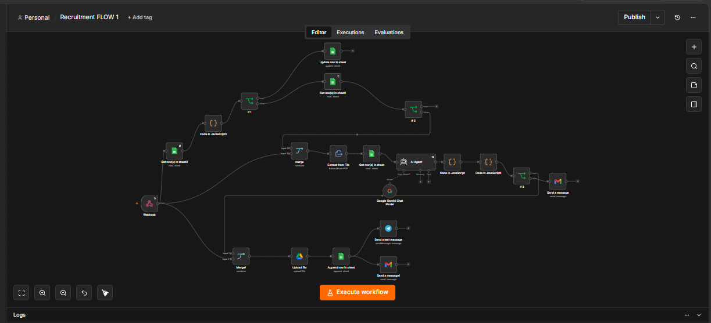
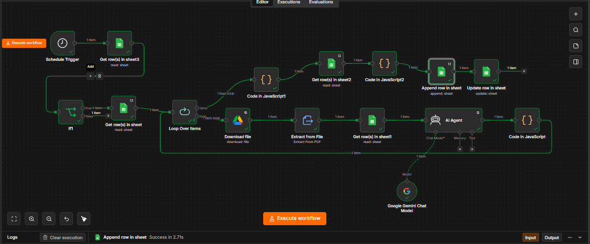
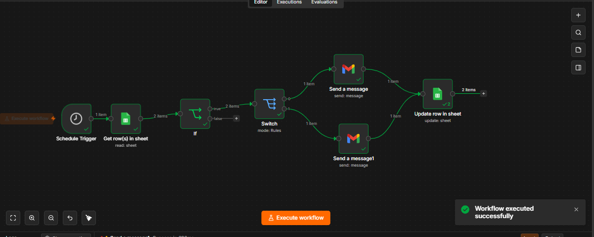

01
Infrastructure & Support
IT operations, endpoint support, networking, file services, CCTV, and infrastructure maintenance.
NetworkingCCTVNAS
I’m Rofiq Sugara — an IT professional working across infrastructure, system administration, and practical digital solutions. I enjoy understanding how operations work, finding friction in the process, and turning it into a reliable system.
IT Infrastructure & Systems
Good IT is not only about fixing issues. It is about understanding the operation behind the issue and building a solution that people can actually use.
My experience includes day-to-day IT infrastructure and user support, network and server environments, virtualization, backup operations, and business application initiatives. I’m also developing my backend engineering skills to better connect operational needs with secure, maintainable software.
Solutions should address the real root cause, not just hide the symptom.
Understand the workflow, identify requirements, then choose the right technical approach.
A combination of operational IT experience and growing software development capability.
IT operations, endpoint support, networking, file services, CCTV, and infrastructure maintenance.
Server and virtualization environments, backup operations, identity and productivity administration.
Learning and building with server-side JavaScript, REST APIs, database operations, and authentication flows.
Breaking down manual workflows, identifying requirements, and shaping them into practical digital processes.
Technology tags describe tools and areas I have worked with or am actively developing; they are not a claim of expert-level proficiency in every tool.
Selected work and prototypes that demonstrate how I approach process improvement, system design, and automation.
A web-based quality inspection workflow concept designed around barcode scanning, inspection points, non-conformance handling, confirmation, and traceable history.
Translating shop-floor inspection activities into structured digital transactions and role-based workflows.
Project description is intentionally generalized; no company data, credentials, or internal records are published.
A process-digitization initiative exploring how production material requests, planning, identification, and issue/return activities can be managed more consistently.
Understanding the business flow, material identity, stock considerations, and the data needed to support operational control.
Presented as a process and development case study, not as a claim of completed production deployment.
An automated recruitment pipeline using n8n, AI services, and Google Workspace to support CV processing, candidate review, and interview invitation workflows.

01 / CV processing & AI analysis

02 / Candidate review & filtering

03 / Interview invitation automation
My professional background is rooted in IT operations and infrastructure support, with hands-on involvement in system improvement and digital initiatives.
Universitas Bina Sarana Informatika · 2022
Supporting IT infrastructure and operational systems, maintaining service continuity, and contributing to practical improvements in the workplace environment.
Worked across end-user support, IT infrastructure, virtualization, backup operations, and support for multiple business departments.
Understand users, constraints, and the operational context before choosing a solution.
Choose tools and designs that solve the problem while remaining understandable and maintainable.
Review what works, identify edge cases, and improve reliability over time.
Open to professional conversations, collaboration, and opportunities in IT infrastructure, system administration, and digital solutions.